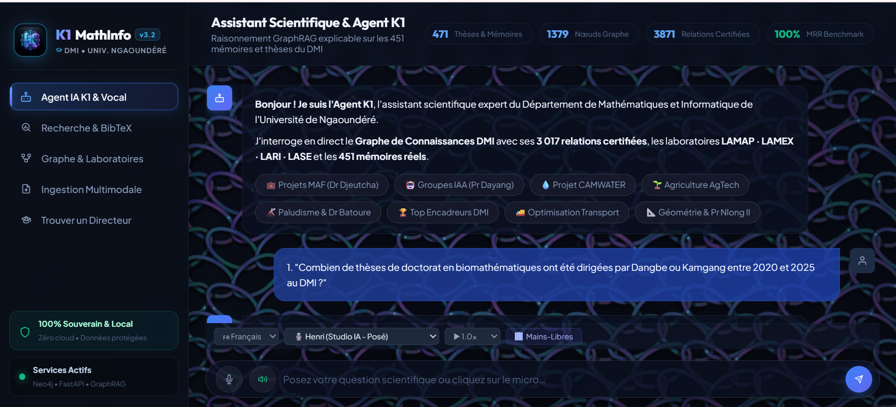

Cinq applications concrètes alliant IA générative, prédiction scientifique, conformité et génie logiciel.

SaaS souverain d'IA Agentique & BIM 5D pour le BTP en Afrique. Candidat officiel au Google Africa Applied AI Lab. Allie l'IA multimodale de Google (Gemini 2.5/1.5 Flash & Gemma 4 12B QAT local via LM Studio) et un moteur déterministe Python Sandbox (IfcOpenShell, BAEL 91, déductions >0,50m²) pour générer des métrés/DQE Excel en <45s (réduction de 99,2% du temps, R² = 0,9872 évalué sous MLflow sur 400 projets).
Next.js 14
Firebase Genkit
Google Gemma 4 / Gemini
Neo4j GraphRAG
Python BAEL 91
MLflow MLOps
Imagen 3.0 + ControlNet

Moteur de Business Intelligence piloté par des Agents IA permettant aux décideurs d'interroger un Data Warehouse complexe en langage naturel (PostgreSQL pgvector & Neo4j N10S, latence <5s). Intègre un pipeline ETL sécurisé, des garde-fous ABAC dynamiques, la sanitation PII et une observabilité complète via un auditeur d'explicabilité SHAP Sentinel.
React + Vite
TypeScript Genkit
Neo4j GraphRAG
Postgres pgvector
ETL & Data Warehouse
SHAP Sentinel
Gemma 12B QAT

Usine MLOps autonome d'ingestion et Data Engineering ETL, d'audit de qualité avec tests automatisés (CI/CD Pytest / Great Expectations) et de gouvernance sémantique (Neo4j Knowledge Graph). Intègre l'observabilité du Data Drift (KS-test / PSI), l'orchestration Genkit avec Gemma-4 12B local, et le tracking MLflow.
TypeScript Genkit
Neo4j GraphRAG
MLflow Tracking
Google Gemma 4
Data Drift (KS/PSI)
Pytest / Automated QA
Streamlit Dashboard

Application & Système de Conformité Sûreté Aéroportuaire pour la CCAA (Autorité Aéronautique du Cameroun). Développée en Streamlit & Python, elle automatise la génération des rapports mensuels normés V4 (.docx), le suivi analytique des KPIs d'inspection (PIF, ZSAR), la vérification des livrables d'audit et la simulation interactive d'auditions d'inspection Sûreté (AVSEC).
Streamlit
Python Sûreté
Rapports Word V4
Conformité CCAA
Simulateur AVSEC

Plateforme MLOps d'intelligence artificielle dédiée au Sahel réduisant les pertes agricoles de 35 % et anticipant les épidémies de méningite 2 semaines en avance. Combine le streaming en temps réel (MQTT / WebSockets) et le suivi spatio-temporel des poussières d'Harmattan (PM2.5) sous observabilité active (MLflow & Supabase Realtime).
Real-Time Streaming
Streamlit MLOps
Python 3.11
Supabase Postgres
Observabilité MLflow
XGBoost / CatBoost
Docker Edge

Système Souverain d'IA Agentique Multi-Agents, GraphRAG & Certification Scientifique pour le DMI (Université de Ngaoundéré). Valorise 28 ans de patrimoine scientifique (470 thèses et mémoires, 19 projets M1, graphe Neo4j de 1 366 nœuds / 3 833 relations). Intègre un réseau de 6 agents coopératifs (LangGraph), une recherche hybride multi-stage (Dense HNSW + BM25 + RRF k=60 + Cross-Encoder), l'attesteur cryptographique OKF v0.2 SHA-256 No-LLM, l'ingestion streaming SSE en 5 étapes et 77 tests automatisés (100% de succès).
FastAPI 0.115
LangGraph Multi-Agents
Neo4j 5.26 GraphRAG
Redis 7 Lua (<3ms)
OKF v0.2 SHA-256
Streaming SSE 5-Étapes
Quorum 4 Yeux (KOA+AZIZ)
77 Tests (100%)